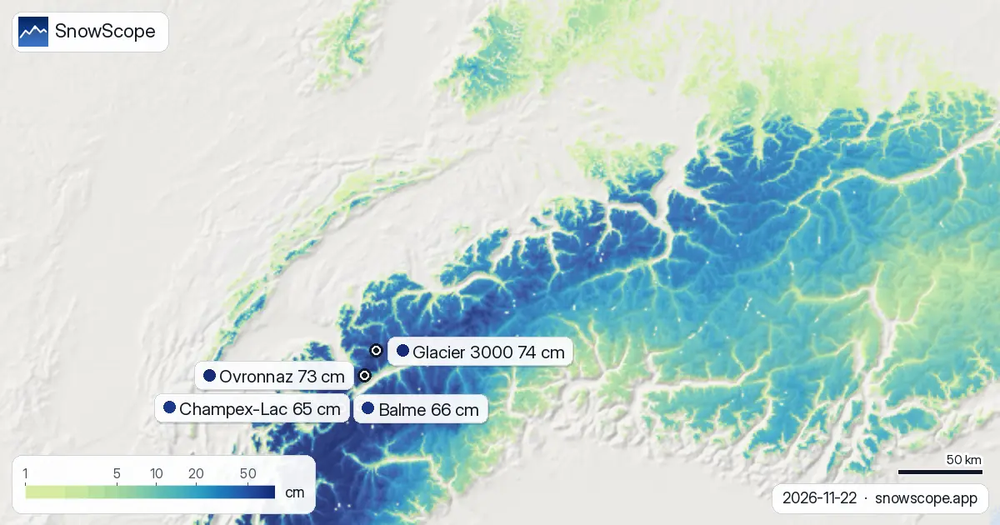

Switzerland 71 percent white, France 18 percent: the Alpine divide on 22 November
Switzerland's mountains are vastly whiter than France's on the same day: 71 percent snow cover against 18 percent. This gap reflects how the recent storms have treated the two countries differently, with Swiss resorts holding substantially more water in the form of fresh snow.
See the live snow forecast for Glacier 3000 in the SnowScope appSnow depth, powder alerts and the 3D map, free.
Why Switzerland is so much whiter
The difference is striking. On 22 November, our model shows Switzerland with snow across 71 percent of the mapped area, while France sits at just 18 percent. This is not random. The Atlantic storms that have moved through the Alps in the past week have deposited far more snow on the Swiss side, especially in the Valais Alps and Bernese Oberland.
The reason is partly geography and partly timing. Swiss mountains catch the first moisture; French slopes often face drier air. In the past 72 hours, the Valais Alps received 166 cm of snow—a dramatic recharge for a mountain range. The Bernese Oberland saw 112 cm. France's snow leader, La Grave, recorded 171 cm in the same period, but that is one point, not a region. Across the whole of France, the white cover remains patchy and low.
From a hydrologist's view, this matters. Snow is stored water. Switzerland is building a winter reservoir far faster than France in early November. That water will feed rivers and reservoirs through spring and summer.
| Country | White | Deepest resort | Next 7 days |
|---|---|---|---|
| Switzerland | 71 % | Glacier 3000 | 49 cm |
| Austria | 60 % | Stubaier Gletscher | 25 cm |
| France | 18 % | La Grave | 38 cm |

Neighbours: contrasting starts
Austria, Switzerland's eastern neighbour, sits between the two extremes at 60 percent white cover. Its leader, Stubaier Gletscher, holds 67 cm of new snow in 72 hours—solid but behind Switzerland's top resorts. Austria faces fewer incoming storms in the next 7 days (25 cm forecast) compared to Switzerland's 49 cm and France's 38 cm.
France is the story of potential without yet enough depth. La Grave, famous for steep terrain, has captured 171 cm in three days—impressive for a point measurement. But the broader French Alps remain thin. This imbalance means skiers in France are chasing pockets of good snow rather than skiing into it everywhere.

Where the Swiss water is deepest
Glacier 3000 leads with 74 cm at its measurement point and 108 cm of new snow in 72 hours. Its top sits at 2931 m, high enough to hold what it has caught. Zermatt, at 3872 m, is the highest resort on our list; it holds 65 cm but has accumulated 74 cm in three days and benefits from glacier height where snow persists longer.
In the Valais Alps as a whole, the snowpack is thickest above 2500 m, where our model estimates 34 cm mean depth. Even the 2000–2500 m band averages 21 cm. This layering means the mountains are storing water efficiently at elevation, where it will not melt quickly.
What is coming
The next three days will add more water to Swiss mountains. Up to 38 cm is forecast across the country. Tomorrow, 23 November, looks to be the snowiest day with up to 28 cm expected. This is the first significant snow day in our model run.
Over the next seven days, the total forecast reaches 49 cm. That will push white cover higher and deepen the snowpack further, especially above 1500 m where full cover is already established. France will see 38 cm in the same period—catching up slightly, but from a much thinner base.
The trend: rapid recharge
One week ago, Switzerland had snow across just 16800 square km. Today it covers 22110 square km—an increase of 5310 square km in seven days. That is a 32 percent expansion of the white area. The trend has been climbing steeply since 19 November, with brief dips but a clear upward slope.
This speed of recharge is typical for early-season storms in the Alps. The mountains are absorbing water fast. From 16 November to today, the snow area grew by 2370 square km in just 24 hours, showing how rapidly conditions can shift when moisture-laden air moves in.
Height matters: snow line at 1100 m
Our model places the snow line at 1100 m today. This means that below that height, snow is sparse: only 16 percent white cover in the 500–1000 m band. Between 1000 and 1500 m, 77 percent is white, though the mean depth is only 4 cm—thin and vulnerable to melt or wind. Above 1500 m, full cover holds, with depths of 15 cm to 34 cm depending on height.
For ski resorts lower than 1500 m, early-season reliability depends on shade, altitude, and ongoing snowfall. Resorts above 2000 m are building a solid base that will persist.
Tips for skiers
- If you ski in Switzerland, focus on resorts above 1500 m where snow is continuous. Glacier 3000 and Zermatt have depth and altitude on their side.
- Watch the next 48 hours: 28 cm is forecast for 23 November. This will fill shallow areas and strengthen the base everywhere.
- In France, seek out high-altitude terrain (La Grave, Chamonix's higher sectors) where new snow is accumulating. Lower slopes may still be thin.
- Consult the official avalanche bulletin if you go off-piste; fresh snow and steep slopes are a hazard combination.
- Check your chosen resort's exact elevation and aspect before you go. Early season means aspect and height are the difference between good snow and rock.
About these numbers
Resort snow depths are the deepest snow on the resort's upper slopes from the SnowScope snow model (about 1 km, run of 22 November); they are estimates for an area, not a measurement at one point. Station values are measurements on the date shown. Forecasts can change. Always read the official avalanche bulletin before going off-piste.
Cite this report
For research, teaching or the press: the numbers and charts are free to reuse under CC BY 4.0 with this citation.
SnowScope (2026), Switzerland 71 percent white, France 18 percent: the Alpine divide on 22 November, https://snowscope.app/blog/en/2026/11/switzerland-snow-vs-neighbours-22-november-2026.html, accessed 2026-11-22
SnowScope (Atlas Labs). (2026, November 22). Switzerland 71 percent white, France 18 percent: the Alpine divide on 22 November. SnowScope snow reports. https://snowscope.app/blog/en/2026/11/switzerland-snow-vs-neighbours-22-november-2026.html
BibTeX
@misc{snowscope2026switzerlandsnowvsneighbo,
author = {{SnowScope (Atlas Labs)}},
title = {Switzerland 71 percent white, France 18 percent: the Alpine divide on 22 November},
year = {2026},
month = nov,
howpublished = {\url{https://snowscope.app/blog/en/2026/11/switzerland-snow-vs-neighbours-22-november-2026.html}},
note = {Published 2026-11-22 11:38 UTC; accessed 2026-11-22}
}· CC BY 4.0 · Methods, data and tools →
Glacier 3000: snow and temperature by height, this winter vs last (tools) →
Follow Glacier 3000
Free: a message when fresh snow is coming, and the forecast every morning.
More snow reports

From 13 to 19 November 2026 Slovenia got the most snow and kept it; Serbia and Croatia had a deep but short white weekend; Montenegro only on Durmitor; Bulgaria almost none. The ranking, with links to each country report.

Zermatt has 47 cm on upper slopes today, 690% above the November median. The 0°C level stays above 2200 m through Friday.

Zermatt in numbers: where the snow lasts, the safest months and how to reach the car-free village, from 46 past winters of snow data.